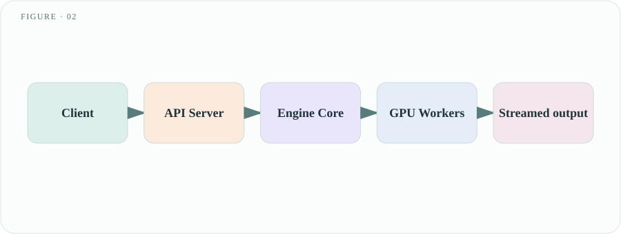

上一章咱们聊了 LLM 推理的基础和痛点。这一章正式认识今天的主角——vLLM。先说说这个名字：vLLM 是 "Very Large Language Model" 的缩写，但它的核心贡献不是"大"，而是"快"和"省"。

2.1 vLLM 的诞生
vLLM 诞生在 UC Berkeley 的 Ion Stoica 实验室（没错，就是那个做 Spark、Ray 的实验室）。2023 年 6 月，几位博士生在实验室里发现了一个问题：明明 GPU 显存还有空余，却没法容纳更多并发请求——因为显存是碎的。
这几位博士生有深厚的系统背景（OS、分布式系统），他们一看这场景就想到了操作系统教科书里的经典解法：虚拟内存分页。于是 PagedAttention 诞生了。同年 10 月，论文在 SOSP 2023（操作系统原理大会，CS 顶会）正式发表。
跨领域洞察：vLLM 是用 OS 的系统思想解决 ML 系统问题。60 年代的分页技术，在 GPU 显存管理上大放异彩。这也是为什么建议做 ML 系统的同学多读一些经典 OS/分布式论文——灵感往往来自跨领域。
2.2 传统推理为什么"慢"
这四个问题，vLLM 用四个核心特性逐一击破：
2.3 vLLM 为什么这么流行
评估推理框架时，不要把安装量、Star 数或未经控制的单点 benchmark 当成性能证据。公平比较需要固定模型 revision、硬件、输入输出长度、并发和延迟目标。
第一，安装简单。 不需要编译 C++ 项目，不需要配 Docker 环境：
pip install vllm
vllm serve meta-llama/Llama-3-8B相比 TensorRT-LLM 的需要配置编译环境、HuggingFace TGI 的需要 Docker，vLLM 的门槛低了一个数量级。
第二，性能真的好。 相比 HuggingFace Transformers，vLLM 可以达到 2-4× 的吞吐提升。而且不用调参——默认配置就很能打。
第三，OpenAI 兼容 API。 现有用 OpenAI SDK 写的代码，改一行 base_url 就能切到 vLLM。迁移成本几乎为零。
第四，社区和生态。 Databricks、AWS、Anthropic 等大厂在使用和贡献。支持的模型列表超过 50 个架构，NVIDIA/AMD/Intel GPU + TPU + CPU 全覆盖。
2.4 发展历程
| 时间 | 事件 | 意义 |
|---|---|---|
| 2023.06 | 项目启动 | UC Berkeley 实验室原型 |
| 2023.10 | SOSP 2023 论文发表 | 学术认可，PagedAttention 正式亮相 |
| 2024 | v0.x 快速迭代 | 社区爆发式增长，模型/硬件支持扩大 |
| 2025.01 | V1 Alpha 发布 | 架构重写，V0 正式弃用 |
| 2025 Q2+ | V1 稳定化 | 自适应批处理、跨节点推理、安全沙箱 |
| 2026 | P-EAGLE, V2 Runner | 并行解码加速 6.7×、控制面/数据面分离 |
学习建议：如果你是 2024 年开始用 vLLM 的老用户，注意 V1 和 V0 有些 API 差异（比如 best_of 被移除、logprobs 语义变化）。本教程基于 V1 讲解，V0 残留知识需要更新。
2.5 竞品对比
| 特性 | vLLM | SGLang | TensorRT-LLM | HuggingFace TGI |
|---|---|---|---|---|
| KV Cache 管理 | PagedAttention | RadixAttention | 连续分配 | 连续分配 |
| 前缀缓存 | 零开销 | Radix 树自动去重 | 有限 | 不支持 |
| 安装 | pip install | pip install | 需编译 | 需 Docker |
| 模型覆盖 | 极广 (50+架构) | 广 | NVIDIA 专用 | HF 模型 |
| 多硬件 | NVIDIA/AMD/Intel/TPU/CPU | NVIDIA/AMD | NVIDIA only | NVIDIA/AMD |
| 推测解码 | n-gram/EAGLE/Medusa | EAGLE | Medusa | 不支持 |
2.6 谁在用 vLLM
- Stripe：迁移后推理成本降低 73%，1/3 GPU 集群处理 5000 万次日均 API 调用
- Anthropic：内部推理基础设施广泛使用
- Databricks：集成到 MosaicML 产品线
- AWS：SageMaker 和 Bedrock 均提供 vLLM 部署选项
- 大量创业公司：vLLM 已成为 LLM 推理的默认选择
注意：虽然 vLLM 很强大，但它不是银弹。如果你的场景是单条请求异步生成（不需要并发），HuggingFace Transformers 可能更简单；如果你只跑 NVIDIA GPU 且追求极致性能，TensorRT-LLM 在一些 benchmark 上可能更优。选择工具要结合场景。
好了，这一章咱们对 vLLM 有了全局认识。下一章开始深入核心算法，首先就是 PagedAttention——看看 OS 的分页思想是如何在 GPU 显存管理上大放异彩的。
参考资料与证据
- PagedAttention 论文（SOSP 2023）Abstract；Evaluation
- vLLM 架构概览Entrypoints；V1 Process Architecture